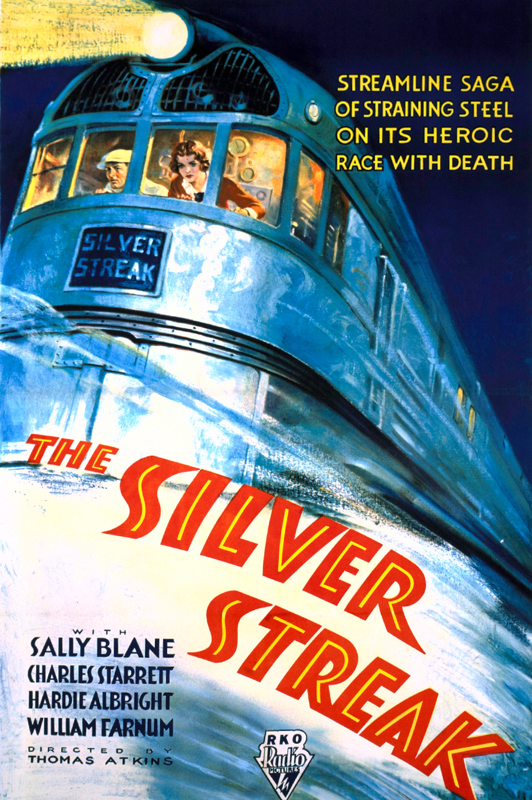

Silver Streak
49th Academy Awards
(Oscars 1977)
1 Nomination, 0 Awards
| Nominations | ||
|---|---|---|
| Category | Nominees | Result |
| Sound | Donald Mitchell, Douglas Williams, Hal Etherington, and Richard Tyler | Nominated |